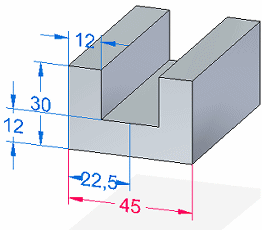
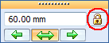
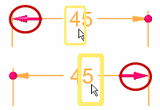
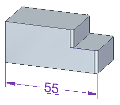
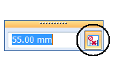
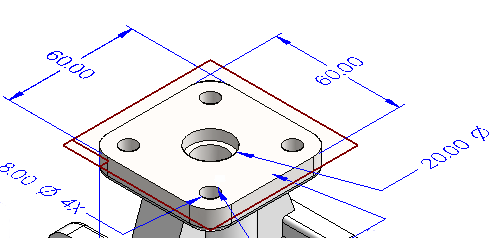
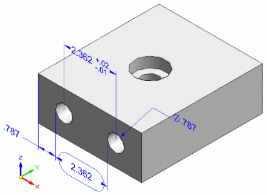
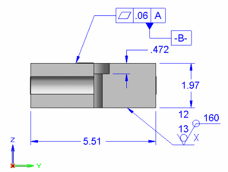
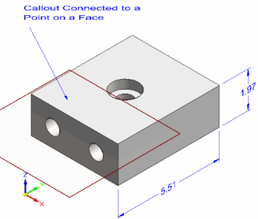

PMI dimensions and annotations
Creating PMI elements
Annotations and dimensions placed on model geometry are PMI elements. They are created in two ways.
-
When you use a sketch to construct a feature, the dimensions placed on the sketch migrate to the appropriate edges on the solid body. These migrated dimensions become three-dimensional, PMI dimensions. See the Help topic, Create a dimensioned part from a sketch.
Annotations placed on a sketch also are copied to the model.
-
You can place dimensions and annotations directly on model edges at any time using any of the commands on the ribbon. In addition, the tool set on the PMI tab conveniently groups all PMI-related functions together in one place.
The commands you use to place dimensions and annotations on sketches and on the model are the same. However, dimensions and annotations placed on 2D sketch elements and those placed on 3D model elements behave differently. The differences are most apparent during editing.
Using driving and driven PMI dimensions
In synchronous models, you can use PMI dimensions to modify the model. You control the effect of model changes by choosing whether a dimension on a model edge is driving or driven, and by specifying the direction of change.
-
A driven dimension means that when faces connected to the dimensioned edge are modified, the dimension value is allowed to change. The default color of a driven dimension is blue.
-
A driving dimension keeps the dimension value from being changed when a connected face is moved or sized.
A dimension must be driving before a formula or variable rule can be applied to the dimension.
The default display color of a driving dimension is red.

In PathFinder, a driving dimension is easily identified by the lock icon
 .
.
You can edit individual dimensions to lock and unlock them, as needed to modify the model. Use the Driving/Driven Dimension button on the Dimension Value Edit dialog box to change a dimension from driven to driving.

If the Driving/Driven Dimension button is not available, you can select the Maintain Relationships command to enable it.
To learn how you can modify a model by editing dimension values, see Editing model dimensions.
PMI dimension colors
The following table explains the color codes assigned to dimensions. Dimension colors indicate whether the dimension value can be modified dynamically.

|
PMI dimension color codes |
|||
|
Color |
Solve condition |
Dynamic Edit? |
Attached to |
|
Blue |
|
Yes |
Synchronous elements |
|
Red |
|
Yes |
Synchronous elements |
|
Purple |
Driven by another dimension or variable |
No |
Ordered elements or otherwise uneditable PMI |
|
Brown |
Not available |
No |
Not adequately attached to any element |
 Driven, free to change
Driven, free to change  Driving, dimension constrained
Driving, dimension constrained Modifying PMI text size and color
-
You can make interactive adjustments to PMI text size so it is easier to read when you zoom in and out of the model.
-
You can change PMI element color globally by modifying the style.
To learn more, see PMI text size and color.
Preselection preview
When you place your cursor on a dimension value, you see two preselection preview features that show you how a dimension value edit will be applied: direction of edit and model face selection.
Direction preview
-
Where you place your cursor prior to selecting the dimension text influences the direction in which the edit will be applied.
-
If you place the cursor on the left side of the dimension value, in this example the number 4, then the direction arrow points left. If you select the dimension value by clicking here, the edit will be applied in this direction.
-
If you place the cursor on the right side of the dimension value, in this example the number 5, then the direction arrow will point right. If you select the dimension value by clicking here, the edit will be applied in this direction.

-
Face selection preview
-
You can preview what model faces will be affected when you edit a dimension value, by pointing to the dimension text without selecting it. The related model faces are highlighted for you to review them.

To change the selection set, you can set and clear relationships using the Design Intent panel or the Advanced Design Intent panel.
You also can affect the outcome by changing the solve option on the Modify Dimension command bar.

To learn more, see these Help topics:
Not-to-scale dimensions
You can override the value of a driven dimension by right-clicking the dimension and selecting Not to Scale from the context menu. Solid Edge underlines the values of not-to-scale dimensions.

The not-to-scale designation appears in the dimension value edit dialog box.

You can change the value and the formatting of a not-to-scale dimension by clicking anywhere on the dimension. If you only want to edit the dimension formatting, you can Alt+click the dimension text, instead.
Using keypoints
When placing PMI model dimensions that you want to use to change the model, you can
use the 3D keypoint filter, Center And Endpoints  and Midpoint
and Midpoint  . This ensures that dimensions are placed on keypoints that are valid for modifying
the model. These keypoints are at the centers of circles and arcs and at the midpoints
and endpoints of edges.
. This ensures that dimensions are placed on keypoints that are valid for modifying
the model. These keypoints are at the centers of circles and arcs and at the midpoints
and endpoints of edges.
The Center and Endpoints, and Midpoint filters use virtual vertices to derive the appropriate keypoint.
To use either of these keypoint filters during dimension placement, select the Keypoints button on the Dimension command bar, under the Other group button. Then select the desired filter.
Using a dimension plane
When you add PMI dimensions and annotations to a model, they are aligned parallel
to a dimension plane. The default plane is the base plane most parallel to the screen.
However, you can choose a different plane using the Lock Dimension Plane option  on the command bar. This option is available when you have selected a dimension or
annotation command.
on the command bar. This option is available when you have selected a dimension or
annotation command.
Only planes you set explicitly appear in the graphics window. These are displayed in red-brown half-highlight.

To turn off a dimension plane you have set, press F3.
Using a dimension axis
Sometimes you need to add a PMI element that measures along an axis that is not orthogonal to the object you are dimensioning. This may be the case when you use the Distance Between, Angle Between, Coordinate Dimension, or Symmetric Diameter command.
When one of these dimension commands is in progress, you can use the Dimension Axis option under the Properties group button on the Dimension command bar to set the dimension axis.
Adding PMI dimensions
You can use the Smart Dimension command to add dimensions to circles, arcs, and ellipses as well as linear elements.
- When adding a dimension that requires two points:
-
-
The first click determines the point to measure from.
-
The second click specifies the point or element to measure to.
-
- Dimension stacking and chaining
-
-
Linear dimensions can be stacked or chained using the Distance Between command.
-
Angular dimensions can be stacked or chained using the Angle Between command.
-
Symmetric diameter dimensions can form a stack, not a chain.
-
All dimensions in a stack or chain must be placed with respect to the same active dimension plane.
-
Each stacked or chained dimension has its own entry on PathFinder.
-

Adding PMI annotations
-
You can place annotations in free space.
-
You can attach annotations to model faces, surfaces, curves, edges, and sketch elements.
-
You can attach annotations to existing dimensions and annotations.
Here, the datum annotation is attached to an existing feature control frame.

They also can connect to faces.

Using property text in PMI elements
You can extract and use property text in PMI dimensions and in callout and balloon annotations.
-
To use property text in callouts and balloons, select the Property Text button
 on the annotation dialog box.
on the annotation dialog box. -
To use property text in a dimension prefix, suffix, subfix, or superfix, copy and paste the property text string into the corresponding text box in the Dimension Prefix dialog box. You can open the Dimension Prefix dialog box by clicking the Prefix button
 on the command bar.
on the command bar. -
To extract hole information from hole features in a part or assembly, use the Hole Reference, Smart Depth, or Hole callout property text strings.
-
You can extract bend information—Angle, Radius, and Direction—from a formed part, but not from a flat pattern.
-
To update property text in PMI elements, use the PMI tab→Property Text group→Update All command.
-
To convert property text strings to plain text for individual annotations and dimensions, use the Convert Property Text command on the selected element shortcut menu.
-
To convert all strings in the document, you can use the PMI tab→Property Text group→Convert All command.
To learn more about property text, see Using property text.
How do I
Display and edit PMI elementsAdd PMI dimensions and annotations
Select multiple reference elements
Create PMI dimensions from the assembly level
Place a PMI dimension using an intersection point
Set a PMI dimension and annotation plane
Show custom occurrence properties in PMI
Move PMI elements in 3D
Reposition PMI text, lines, and arrows
Copy PMI elements from a sketch or feature
Add or remove PMI elements in a model view
Learn more
PMI edit handles and cursorsPlacing PMI dimensions using intersection points
Look up more details
Lock Plane commandLock Dimension Plane command bar
Move Dimension command
Add To Model View command
Remove From Model View command